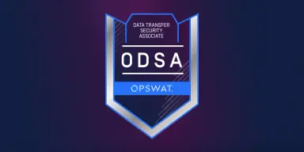

Автор
Инж. Александър Петров
Lead Cyber Security Architect на DefComs. Над 15 години опит в проектирането на корпоративни SOC мрежи, Zero Trust среди и инцидентен мениджмънт.
За автора
Инж. Александър Петров е главен архитект по киберсигурност в DefComs. Той има над 15 години опит в проектирането и внедряването на комплексни решения за киберсигурност за големи корпоративни клиенти.
Неговата експертиза обхваща:
- Проектиране и внедряване на Security Operations Center (SOC)
- Zero Trust архитектура и мрежова сегментация
- Инцидентен мениджмънт и response planning
- SIEM, NDR и threat intelligence интеграции
- Киберсигурност за предприятия и критична инфраструктура
Сертификати
Притежавани професионални сертификати от OPSWAT:



Статии от автора
Архитектура и стратегии
Azure Security: откъде да започнете защитата на Azure среда?
Прочети статията →
Архитектура и стратегии
Cloud IAM: как да управлявате идентичности и достъп в облака?
Прочети статията →
Архитектура и стратегии
SOC vs SIEM: каква е разликата и защо често се използват заедно?
Прочети статията →
Архитектура и стратегии
Zero Trust Network: мрежова сегментация и достъп до ресурси
Прочети статията →
Архитектура и стратегии